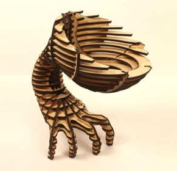
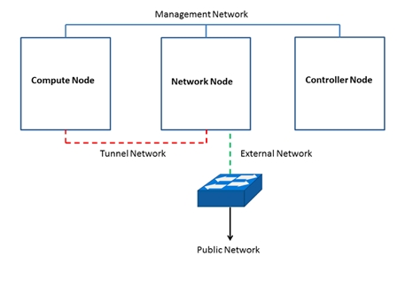

High Performance Computing (HPC) refers to the practice of aggregating computing power in a way that delivers much higher performance than one could get out of a typical desktop computer or workstation in order to solve large problems in science, engineering, or business. The HPC system at RSET has a computing power of upto 6.1 TFLOPS, catering to the ever-increasing demands of high performance computing for scientific and engineering research at the college. The cluster consists of state-of-the-art computing systems connected by a powerful high- speed Infiniband switch and cables, with sophisticated software packages. It consists of four computing nodes, one head node and one storage node. The centre will have the support from HPC-Now, which is an HPC consultancy services company based in Barcelona, Spain. They have offered their expertise and knowledge-sharing in setting up and managing this center through their efficient supercomputer administrative suite, called sNow.

| Node Type | Processor | RAM | HDD | Storage | Clock Speed |
|---|---|---|---|---|---|
| Head Node (sNow Server) | Intel Xeon Processor E5-2620 v4 (8 cores) * 2 | 64 GB | 500 GB*2 | 2.1 GHz | |
| Storage Node | Intel Xeon Processor E5-2620 v4 (8 cores) * 2 | 64 GB | 800 GB | 5 * 2 TB | 2.1 GHz |
| Computing Node with GPU (1 No) | Intel Xeon E5-2690 v4 (14 cores) * 2 | 128 GB | 500 GB SSD | 2.6 GHz | |
| Computing Nodes (3 Nos) | Intel Xeon E5-2690 v4 (14 cores) * 2 | 128 GB | 500 GB SSD | 2.6 GHz |
MSX6015F-1SFS--- MellanoxSwitchX®-2 based FDR InfiniBand 1U Switch, 18 ports
| Application | Description |
|---|---|
| GROMACS | It is a versatile package to perform molecular dynamics, i.e., simulate the Newtonian equations of motion for systems with hundreds to millions of particles. |
| OpenFOAM | Free open-source CFD software to solve anything from complex fluid flows involving chemical reactions, turbulence and heat transfer, to acoustics, solid mechanics and electromagnetics. |
| WRF | The Weather Research and Forecasting (WRF) Model is a weather prediction system designed for both atmospheric research and operational forecasting needs. |
| ABINIT | It is an open-source suite of programs for materials science, distributed under the GNU General Public License. |
| mpiBlast | It is a parallel implementation of NCBI BLAST. Allows multi-threading in more than one node. Application: Bioinformatics |
| Quantum Espresso | It is an integrated suite of Open-Source computer codes for electronic-structure calculations and materials modeling at the nanoscale. It is based on density-functional theory, plane waves, and pseudopotentials. |
| Application Libraries |
|
Mini Fab Lab has been setup in RSET inside Sunya Lab in June 2017. It has been up and running . RSET Sunya Fab Lab has 3D printer, Laser Engraver, Vinyl Cutter, Sand Blaster and an Electronic Work Station. Regular weekly training program is conducting for students. 40 interested candidates from all the departments are participating in this. Final year students have immense use with 3D printer and they are using it effectively. Some of the student projects are Prosthetic Hand, Pen Plotter and Morphing Wings. Before the beginning of semester, training program for faculty members and technical staffs were conducted. Fab Lab hosted an FDP conducted by Kerala Start Up Mission from 23rd oct 2017 to 26 th oct 2017. Fab Lab together with IEDC and RSET incubation cell can inspire and facilitate students for implementing innovative ideas.
Laser Cutter Laser cutters are among the easiest machines to use in a Fab Lab. A laser cut engraves or cuts a piece of wood in the shape you decided on the computer. The precision is usually very good: less than 0.02mm. Other materials are allowed such as acrylic, fabric, rubber, leather… Laser cutters will give your Fab Lab a nice burnt wood smell, but you will also need to invest in a ventilation system. Cost: $9,995.(laser-cutter + Atmos Exhaust System)

A ShopBot is a CNC router that is excellent for woodworking, manufacturing, prototyping, creating furnitures, music instruments, signs or boats… They come in many sizes and features. You will need a dust collector to go with. Cost: $22,158 (ShopBot Closed Loop + Dust Collector)


3D printers are very useful machines to own in a Fab Lab. Manufacturers are now proposing 3D printers for small prices. Home printers like Makerbot or Ultimaker are more and more used in Fab Labs because they are now more reliable and precise.The 3D printer will create your design layer after layer. Like these shoes for example:


At the difference of 3D printers that work by adding material, Milling machines subtracts material. They can make a great variety of prototypes and products such as cases, jewelry, light metal mold,


Sunya Labs has set up a Cloud computing research cluster using OpenStack cloud middleware. It is an OpenStack minimal three node architecture as given below.
The above diagram shows the OpenStack architecture we have implemented at RSET. We have used OpenStack Juno for our implementation. It has a Network Node, Controller Node, three Compute nodes and few on-site Client nodes. All machines run Ubuntu 14.04 as the Operating System